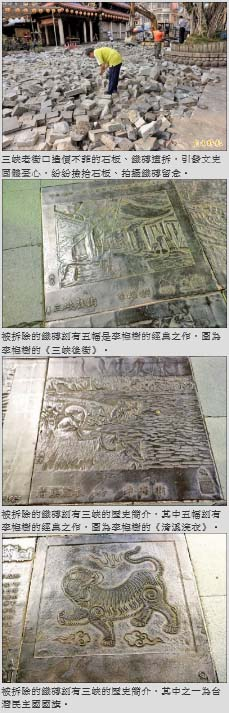

三峽老街改柏油路 特色鐵磚遭挖除
張安蕎｜自由時報／新北都會生活｜2016年4月7日
三峽老街路面上有不少鐵磚，上頭刻有三峽的歷史簡介、畫家李梅樹的作品等，不僅是老街的一大特色，也讓旅客能從腳下發現三峽文化，未料三峽區公所昨天將老街前約三十公尺的路面，改鋪成一般柏油路，引發在地居民、文史團體憂心，紛紛撿拾石板、拍攝鐵磚留念。
有李梅樹作品 文史團體不捨
被挖除的鐵磚共有三十片，其中五幅刻有李梅樹的經典之作，另外包括台灣民主國國旗、三峽名產和名勝等介紹，石板則為青斗石、花崗岩材質，造價不菲，路面兼具文化與實用價值。
區長表示將妥善保管再利用
三峽里長黃宗祥表示，改鋪柏油的地段位於老街口，並非徒步區，汽機車行駛在石板與鐵磚之上，恐有打滑危險，曾看過遊客、警察在此摔過數十次，里民不斷反映要求改善，才申請改鋪柏油路面。
三峽區長陳健民坦言工務課有疏失，將妥善保管鐵磚，並偕同地方團體討論，將鐵磚改立於長福橋兩側，成為公共藝術，讓遊客易於拍攝、認識地方文化。
「今年適逢老街一百週年，老街的一大特色竟遭破壞，太諷刺！」居民張光驊感嘆，止滑有千百種方式，為何一定要拆除？百萬造價的石板路改為柏油，不僅與老街風貌不一致，也讓美觀、質感大為降低，當初地方團體耗費多大努力，才爭取到經費鋪設石板路面，如今各單位還未妥善溝通就倉促挖除，讓多數人的文化記憶也隨之滅失。
「深坑老街求之不可得，三峽竟然遺棄！」李梅樹紀念館也發出聲明表示，民國九十七年重建老街時，紀念館未收任何版權費用，無償提供圖像設置鐵磚，如今拆除不得移轉他處使用，將請律師依法追訴。